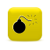

Vocabulary
All Kansai-ben vocabulary currently explained on the site. Click any word to see its definition, standard Japanese equivalent, and usage notes.
| Word | Meaning | Standard | Suitability |
|---|---|---|---|
| まぶし | barbecued eel on rice |
うなぎめし (鰻飯) | |
| いがむ | to tilt; to be not straight; to twist |
かたむく／ずれる (傾く／ずれる) | |
| いきる | to be livid; to try and come off as strong; to be cock... |
ちょうしにのる／いきがる (調子に乗る／粋がる) | |
| いこる | to burn; to catch fire |
おこる (熾る) | |
| いちびる | to mess around too much; to be unable to sit still |
ちょうしにのる／ふざける (調子に乗る／ふざける) | |
| いちびり | a person who is very energetic and messes around a lot... |
おちょうしもの (お調子者) | |
| いぬ | to return (home) |
かえる (帰る) | |
| いらち | hothead; short-tempered person |
せっかち／たんきなひと (せっかち／短気な人) | |
| いわす | to beat someone up; to injure or break (body parts) |
やっつける／(からだを)こわす (やっつける／(体を)壊す) | |
| ええし | rich family; good family |
かねもちのいえ／りょうけ (金持ちの家／良家) | |
| えずく | to feel nauseous |
はきけをもよおす／はく (吐き気を催す／吐く) | |
| おかい | rice porridge |
おかゆ (お粥) | |
| えらいさん | negative term for person who has high status. |
ちいのたかいひと (地位の高い人) | |
| えんりょのかたまり | that one last piece of food at the table that everyone... |
のこりもの(たべもの) (残り物(食べ物)) | |
| おこしやす | welcome |
いらっしゃい | |
| おかん | mom; mother |
おかあさん (お母さん) | |
| おとん | dad; father |
おとうさん (お父さん) | |
| おちょくる | to make fun of someone; to tease someone |
からかう | |
| おとつい | the day before yesterday; two days ago |
おととい (一昨日) | |
| おない | same aged; in the same cohort |
おないどし (同い年) | |
| おはようおかえり | come home early |
||
| おこうこ | pickled radish |
たくあん (沢庵) | |
| おぼこい | childlike; childish |
おさなくてそぼくなようす (幼くて素朴な様子) | |
| かしわ | chicken meat |
とりにく (鶏肉) | |
| かなわん | irritating; intolerable |
いやだ／たまらない (嫌だ／堪らない) | |
| かなん | irritating; intolerable |
いやだ／たまらない (嫌だ／堪らない) | |
| かまへん | no problem |
かまわない (構わない) | |
| かめへん | no problem; don't worry (about it) |
かまわない (構わない) | |
| がめつい | greedy |
ごうよく／よくばり (強欲／欲張り) | |
| かんてき | small cylindrical grill |
しちりん (七輪) | |
| きぃわるい | unpleasant; disturbing |
かんじがわるい (感じが悪い) | |
| けったくそわるい | irritating; infuriating |
しゃくにさわる／いまいましい (癪に障る／忌々しい) | |
| きつねうどん | udon with deep-fried tofu |
あげうどん | |
| ごあさって | three days after tomorrow |
しあさってのつぎのひ (明々後日の次の日) | |
| こそばい | ticklish; be tickled |
くすぐったい | |
| ごつい | big; large; strong; great |
でかい／つよい／すごい (でかい／強い／凄い) | |
| ごんた | mischievous boy; boy who's hard to handle |
わんぱくぼうず／やんちゃぼうず (腕白坊主／やんちゃ坊主) | |
| さし | ruler |
ものさし／じょうぎ (物差し／定規) | |
| さぶいぼ | goose bumps |
とりはだ (鳥肌) | |
| さら(な) | new (thing) |
あたらしい (新しい) | |
| えんりょしい | a person who has the tendency to refuse to accept anyt... |
えんりょしがちなひと (遠慮しがちな人) | |
| けつねうどん | udon with deep-fried tofu |
あげうどん | |
| あんさん | you |
あなた | |
| おます | to exist (thing) |
あります | |
| あない | that (over there) sort/kind of...; ...such as that (ov... |
あんなに | |
| あんま | not very; too much |
あんまり | |
| あんまし | not very; too much |
あんまり | |
| いっぺん | once; one time |
いちど (一度) | |
| ようけ | a lot; many |
たくさん／いっぱい | |
| ようさん | a lot; many |
たくさん／いっぱい | |
| おいでやす | welcome |
いらっしゃい | |
| おる | to exist (living things) |
いる | |
| かいてんやき | dessert food with a puck-like in shape and crispy shel... |
いまがわやき (今川焼(き)) | |
| おんどれ | you (violent) |
おまえ (お前) |
 |
| かいもん | shopping |
かいもの (買い物) | |
| きぃつける | to pay attention to; to be careful |
きをつける (気をつける) | |
| くだらん | worthless; silly; not important |
くだらない (下らない) | |
| うち | I (feminine) |
わたし (私) | |
| このまんま | as it is; like this |
このまま | |
| こない | this sort/kind of...; ...such as this |
こんなに | |
| さいなら | Good-bye. |
さようなら | |
| しゃあない | can't be helped; hopeless; there's no way |
しかたない (仕方ない) | |
| たいこやき | dessert food with a puck-like in shape and crispy shel... |
いまがわやき (今川焼(き)) | |
| めっちゃ | very; extremely |
すごく (凄く) | |
| そや | like you said; oh yeah...; well... |
そうだ | |
| せや | like you said; oh yeah...; well... |
そうだ | |
| せやから | therefore; so; because of that |
そうだから | |
| せやけど | I know (that) but... / by the way... |
そうだけど／だけど／それにしても | |
| そやけど | I know (that) but... / by the way... |
そうだけど／だけど／それにしても | |
| ほやけど | I know, but... |
そうだけど／だけど／それにしても | |
| すんまへん | sorry; excuse me |
すみません | |
| ほんで | and; so that; therefore |
それで | |
| ほな | Alright then |
じゃあ | |
| ござそうろう | dessert food with a puck-like in shape and crispy shel... |
いまがわやき (今川焼(き)) | |
| ほんでも | but |
それでも | |
| ほんなら | well then; so |
それじゃ | |
| ほなら | well then; so |
それじゃ | |
| そない | that sort/kind of...; ...such as that |
そんなに | |
| せやさかい | so; because of (that); therefore |
そうだから | |
| かて | because |
(た)って | |
| かって | because |
(た)って | |
| ちゃう | to be different; to be wrong |
ちがう (違う) | |
| ちと | a little; a small amount |
ちょっと | |
| なんば | corn |
とうもろこし | |
| どないした | What happened? |
どうした | |
| どないしょ | What should I/we do? |
どうしよう | |
| どないする | What should (sb.) do? |
どうする | |
| どや | How about...? |
どうだ | |
| あらへん | don't exist (thing); not |
ない | |
| あれへん | doesn't exist (things) |
ない | |
| しばく | to beat someone up |
なぐる (殴る) | |
| どつく | to hit; to beat up |
なぐる／たたく (殴る／叩く) | |
| ほる | to throw |
なげる (投げる) | |
| なんぞ | some; any |
なにか (何か) | |
| なんばきび | corn |
とうもろこし | |
| なんも | nothing/not any (used negative verb); everything (used... |
なにも (何も) | |
| なんべん | how many (times) |
なんど (何度) | |
| わい | I/me (masculine) |
おれ (俺) | |
| わし | I/me (masculine) |
おれ (俺) | |
| はん | Mr./Ms./Mrs. (respect title suffix |
||
| もっぺん | once more; one more time; again |
もういっかい (もう一回) | |
| もっかい | once more; one more time; again |
もういっかい (もう一回) | |
| もん | "thing" |
もの (物) | |
| いてまえ | Let's beat them up! |
やってしまえ | |
| かんにんする | to forgive |
ゆるす (許す) | |
| てっさ | blowfish sashimi |
ふぐのさしみ (河豚の刺身) | |
| よう | often; frequently; well |
よく | |
| よろしゅう | thank you (in advance) |
よろしく | |
| わて | I/me |
わたし (私) | |
| うっとこ | my house |
わたしのいえ (私の家) | |
| こら | this |
これは | |
| そら | that |
それは | |
| あら | that (over there) |
あれは | |
| いっしょくたにする | to jumble together; to mix up |
ごちゃまぜにする (ごちゃ混ぜにする) | |
| ここんとこ | recently; these days |
さいきん (最近) | |
| そんで | and; and then |
それで | |
| てっちり | blowfish hotpot |
ふぐのなべ (河豚の鍋) | |
| あっこ | over there |
あそこ | |
| チャリンコ | bicycle |
じてんしゃ (自転車) | |
| チャリ | bicycle |
じてんしゃ (自転車) | |
| べんきょうする | discount |
まける (負ける) | |
| あんた | you |
あなた | |
| わや | incoherent; messed-up |
めちゃくちゃ(な) (目茶苦茶(な)) | |
| じゃまくさい | annoying; a pain; tiresome |
めんどうくさい (面倒臭い) | |
| じゃあくさい | annoying; a pain; tiresome |
めんどうくさい (面倒臭い) | |
| すい | sour |
すっぱい (酸っぱい) | |
| すこい | devious; cunning |
ずるがしこい (狡賢い) | |
| てんこもり | mountain-like heap of something; large pile |
やまもり (山盛り) | |
| たく | to stew; to simmer |
にる (煮る) | |
| ちょける | to joke; to clown |
ふざける | |
| ちょけ | person who jokes around all the time |
ふざけたことをする(いう)ひと (ふざけたことをする(言う)人) | |
| どんならん | can't be helped; (be resigned) |
どうにもならない | |
| どんつき | end (of a street) |
つきあたり (突き当たり) | |
| おなか(が)おおきい | have a full stomach |
おなか(が)いっぱい (お腹(が)一杯) | |
| はんなり | humbly graceful and elegant |
じょうひんではなやか (上品で華やか) | |
| ひらう | to pick up |
ひろう (拾う) | |
| まいど | thank you (literally "every time") |
いつも (何時も) | |
| ひろうす | deep-fried tofu cake made with vegetables and other in... |
がんもどき | |
| よろしゅうおあがり | [set phrase in response to ごちょそうさまでした, literally somet... |
||
| けぇ | hair |
け (毛) | |
| めぇ | eye |
め (目ぇ) | |
| てぇ | hand |
て (手) | |
| はぁ | tooth |
は (歯) | |
| ちぃ | blood |
ち (血) | |
| ほたえる | to be too loud; to be to be meaninglessly noisy |
さわぐ (騒ぐ) | |
| げす(な) | crude; declasse |
げひん(な) (下品(な)) | |
| こえる | to get fat |
ふとる (太る) | |
| こいも | taro |
さといも (里芋) | |
| こすい | devious; cunning |
ずるがしこい (狡賢い) | |
| しゅむ | to soak in; to penetrate; to absorb into |
しみる (染みる) | |
| とこ | place; location |
ところ (所) | |
| なんしか | anyhow; at any rate; anyways |
なにしろ (何しろ) | |
| ぱくる | to steal |
ぬすむ (盗む) | |
| ぱちる | to steal |
ぬすむ (盗む) | |
| ばったもん | fake; forgery |
にせもの (偽物) | |
| べっぴん | beautiful woman or girl |
びじん (美人) | |
| ぼんさん | a Buddhist priest |
おぼうさん (お坊さん) | |
| ぶたまん | pork bun |
にくまん (肉まん) | |
| マクド | McDonald's™ |
マック(ドナルド) | |
| いらんこと | unnecessary matter or thing |
よけいなこと (余計なこと) | |
| かまん | no problem |
かまわない (構わない) | |
| えばる | to be arrogant |
いばる (威張る) | |
| おばはん | aunt; middle-aged woman |
おばさん (叔母さん) | |
| おっさん | uncle; middle-aged man |
おじさん (叔父さん) | |
| おっちゃん | uncle; middle-aged man |
おじさん (叔父さん) | |
| おばちゃん | aunt; middle-aged woman |
おばさん (叔母さん) | |
| どない | how; what sort/kind of... |
どう | |
| どもならん | can't be helped; (be resigned) |
どうにもならない | |
| なんきん | pumpkin |
かぼちゃ (南瓜) | |
| ねちこい | persistent; stubborn; sticky |
しつこい／ねばっている (しつこい／粘っている) | |
| ぱちもん | fake; forgery |
にせもの (偽物) | |
| めちゃめちゃ | very; extremely (more than めちゃ) |
すごく (凄く) | |
| めちゃ | very; extremely |
すごく (凄く) | |
| はんじかん | half an hour |
30ぷん (30分) | |
| おあいそ | check; bill |
おかんじょう (お勘定) | |
| おこのみ | okonomiyaki |
おこのみやき (お好み焼き) | |
| さよか | I see... / Is that the way it is...? |
そうですか | |
| おはようさん | Good morning. |
おはよう (お早う) | |
| なおす | to put away; to clean up |
かたづける (片付ける) | |
| ごくろうさん | Thank you for... / You worked hard... |
ごくろうさま (ご苦労様) | |
| きぃ | mind; spirit |
き (気) | |
| きぃきく | to be sensible |
きがきく (気が利く) | |
| きぃある | to be interested in |
きがある (気がある) | |
| だれぞ | anyone; someone |
だれか (誰か) | |
| さかい | so; therefore |
から | |
| よって | so; therefore |
から | |
| よっしゃ | Great! / Well done! / Good. / I see. |
よし | |
| あんな | Guess what? / Listen... |
あのね | |
| こないだ | the other day |
このあいだ (此の間) | |
| よせてもらう | to visit |
ほうもんする (訪問する) | |
| せやかて | So you say, but... / Yeah, but... |
そうはいっても／そうだけど (そうは言っても／そうだけど) | |
| ほやかて | So you say, but... / Yeah, but... |
そうはいっても／そうだけど (そうは言っても／そうだけど) | |
| そやかて | So you say, but... / Yeah, but... |
そうはいっても／そうだけど (そうは言っても／そうだけど) | |
| なんで | why |
なぜ／どうして (何故／どうして) | |
| どこぞ | anywhere; somewhere |
どこか (何処か) | |
| じぶん | you |
きみ (君) | |
| カッターシャツ | dress shirt |
ワイシャツ | |
| モータープール | parking lot |
ちゅうしゃじょう (駐車場) | |
| レーコー | iced coffee |
アイスコーヒー | |
| かぁにかまれる | to be stung by a mosquito |
かにさされる (蚊に刺される) | |
| こうく | school attendance boundary; school neighborhood |
つうがくくいき (通学区域) | |
| すんません | sorry; excuse me |
すみません | |
| こしょばい | ticklish; be tickled |
くすぐったい | |
| そやから | therefore; so; because of that |
そうだから | |
| どんぐらい | about how much; about how long |
どのくらい | |
| おしピン | thumbtack; pushpin |
がびょう (画鋲) | |
| ぺけ | a "missed question" mark on a test; an "X" mark |
ばつ | |
| すっこい | devious; cunning |
ずるがしこい (狡賢い) | |
| そやさかい | so; because of (that); therefore |
そうだから | |
| おちょけ | person who jokes around all the time |
ふざけたことをする(いう)ひと (ふざけたことをする(言う)人) | |
| おちょける | to joke; to clown |
ふざける | |
| あんばい | (in a good) condition; (well) adjusted |
ぐあい／かげん (具合／加減) | |
| うだうだ | grumbling; whining; complaining |
ぐだぐだ | |
| こちょばい | ticklish; be tickled |
くすぐったい | |
| えらい | great; very/really; tired |
すぐれている; とても; つかれている (優れている; とても; 疲れている) | |
| あて | I/me |
わたし (私) | |
| こっすい | devious; cunning |
ずるがしこい (狡賢い) | |
| ほいで | and; so that; therefore |
それで | |
| かいせい | college grade level counter |
ねんせい (年生) | |
| あかん | bad; impossible; hopeless; no; cannot |
だめ (駄目) | |
| ほんま | really; truly |
ほんとう (本当) | |
| いっつも | always; whenever; never (in a negative sentence) |
いつも | |
| あほくさい | foolish; ridiculous (negative meaning) |
ばからしい | |
| えぐい | terrible; cruel; awful |
ひどい (酷い) | |
| ええ | good; fine |
いい | |
| おもろい | interesting; funny |
おもしろい (面白い) | |
| かいらし(い) | cute; pretty; lovely |
かわいらしい (可愛らしい) | |
| かえらし(い) | cute; pretty; lovely |
かわいらしい (可愛らしい) | |
| なすび | eggplant |
なす (茄子) | |
| ぎょうたましい | exaggerated; overdone |
おおげさ(な) (大袈裟(な)) | |
| けったい(な) | strange; odd; weird |
へん(な) (変(な)) | |
| ごっつ(い) | amazing; big; large; strong; great |
でかい／つよい／すごい (でかい／強い／凄い) | |
| さぶい | cold (temperature) |
さむい (寒い) | |
| しんきくさい | gloomy; dull; annoyed; glum; irritated |
うっとうしい／いらいらする／じれったい／たいくつ(な) (鬱陶しい／いらいらする／焦れったい／退屈(な)) | |
| しょうもない | unimportant; boring |
つまらない | |
| ずっこい | cunning; sly; play unfair; foul |
ずるい (狡い) | |
| せわしない | restless; nervous |
おちつかない (落ち着かない) | |
| ちめたい | cold |
つめたい (冷たい) | |
| つくり | sashimi |
さしみ (刺身) | |
| どんくさい | slow; stupid; dumb |
とろい (とろい) | |
| ぬくい | warm |
あたたかい (暖かい) | |
| ねちっこい | persistent; stubborn; sticky |
しつこい／ねばっている (しつこい／粘っている) | |
| ばっちい | dirty; unclean |
きたない (汚い) | |
| みみっちい | stingy; tight with money |
けち(な) | |
| ややこしい | troublesome; complicated |
めんどう(な)／ふくざつ(な) (面倒(な)／複雑(な)) | |
| よくどしい | greedy |
よくばり(な) (欲張り(な)) | |
| いけず(な) | mean; spiteful |
いじわる(な) (意地悪(な)) | |
| あほ(な) | fool; stupid; idiot |
ばか(な) (馬鹿(な)) | |
| すうどん | (bowl of) plain udon |
かけうどん | |
| まっさら(な) | brand new (thing) |
まあたらしい (真新しい) | |
| ほかす | to throw away |
すてる (捨てる) | |
| しんどい | tired; exhausted |
くたびれる | |
| こける | to fall |
ころぶ (転ぶ) | |
| ぼちぼち | alright; soon |
まあまあ／そろそろ | |
| なんぎ(な) | hard; difficult; a pain in the neck (when applied to a... |
めんどう(な)／むずかしい／こまった (面倒(な)／難しい／困った) | |
| せっしょう(な) | cruel; heartless; brutal |
むごい (惨い) | |
| えげつない | mean-spirited; terrible; nasty |
あくどい／ひどい (あくどい／酷い) | |
| おおきに | Thank you. |
ありがとう (有り難う) | |
| なんぼ | how much; how many; how old |
いくら／いくつ (幾ら／幾つ) | |
| かやくごはん | cooked rice with vegetables and meat/seafood seasoned ... |
たきこみごはん (炊き込み御飯) | |
| ぎょうさん | a lot |
たくさん (沢山) | |
| もうかりまっか | How's business? |
もうかっていますか (儲かっていますか) | |
| パーマあてる | to get a perm |
パーマをかける | |
| いらう | to touch |
さわる (触る) | |
| ほったらかす | to neglect; to leave alone |
ほうっておく (放っておく) | |
| とちる | to fail; to make a mistake |
しっぱいする (失敗する) | |
| めくそ | eye booger |
めやに (目やに) | |
| めばちこ | sty |
ものもらい | |
| けんけん | hop on one foot |
かたあしとび (片足跳び) | |
| まむし | barbecued eel on rice |
うなぎめし (鰻飯) | |
| べった | last place |
びり | |
| げら | person who laughs at anything |
よくわらうひと (よく笑う人) | |
| がさ | fidgety/restless person |
がさつなひと (がさつな人) | |
| ちゃらんぽらん | irresponsible; half-hearted |
いいかげん／むせきにん (いい加減／無責任) | |
| あかんたれ | a timid person; a chicken |
だめなやつ／よわむし (駄目な奴／弱虫) | |
| あじない | plain; dull; tasteless |
あじけない／おいしくない (味気ない／美味しくない) | |
| あて | food eaten with alcoholic drinks; bar snacks |
さけのさかな (酒の肴) | |
| あほほど | way too much; a lot |
ばかみたいに (ばかみたいに) | |
| あほんだら | #$%& you!; Jerk! |
ばかやろう (馬鹿野郎) | |
| あんじょう | well; faithfully; steadily |
じょうずに／うまく／ちゃんと／しっかりと (上手に／上手く／ちゃんと／しっかりと) |